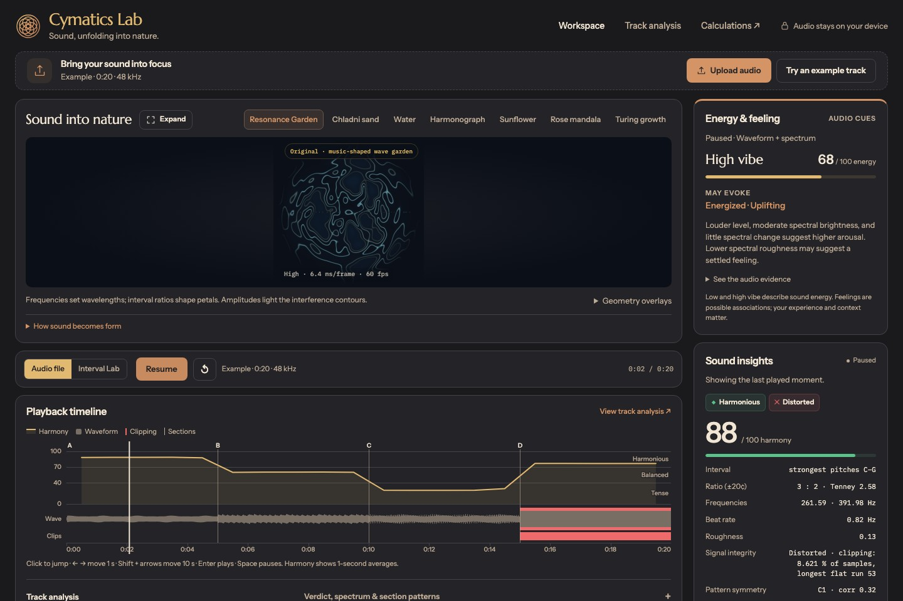

A garden that follows the music.
Notes, frequencies, and amplitudes shape an original wave field. Switch between the Garden, Chladni sand, water, and other mathematical views.
A closer listen. A different view.
Your music becomes a living garden of waves. Explore its notes, harmony, and energy in a space made for listening.
For Apple silicon & Intel · macOS 12 or later

A window into what you hear
Bring a track, explore an interval, or start with the built-in example. Watch the sound take form, then look a little deeper.

Notes, frequencies, and amplitudes shape an original wave field. Switch between the Garden, Chladni sand, water, and other mathematical views.
Explore harmony, acoustic energy, and signal integrity as separate measurements. Seek through the timeline to find where the sound changes.
Open a track directly from your Mac. Playback, visualization, and analysis run locally, with no account or audio upload to a server.

Make room for a closer listen
One app. Your own music.
A new way to pay attention.
Version 0.1.0 · Universal app · 4.4 MB
Apple silicon and Intel Macs
macOS 12 or later
This early access build is not Apple-notarized. After trying to open it, you may need to approve Cymatics in System Settings → Privacy & Security → Open Anyway.
SHA-256 checksumBefore your first listen
Yes. The Mac app includes its visualization, analysis, and fonts. You can open your own tracks and use the example without an internet connection. Reference links open in your browser when you choose to follow them.
WAV, MP3, FLAC, OGG, M4A, and AIFF appear in the file picker. Decoding depends on the audio formats supported by your version of macOS; WAV and MP3 are good starting points. Tracks can be up to 10 minutes and 100 MB.
Cymatics describes measurable qualities of sound. Harmony and acoustic energy are estimates, and tension can be an intentional part of music. These measurements cannot predict how you will feel or judge a song’s artistic value.
The Resonance Garden is a music-conditioned mathematical model. Its waves follow an explicit mapping of notes, frequencies, and amplitudes. It creates an original visual interpretation of sound; it does not simulate matter at atomic resolution.
This first desktop release packages the current Cymatics Lab. Features and analysis are still evolving. This early access build is not Apple-notarized. After trying to open it, you may need to approve Cymatics in System Settings → Privacy & Security → Open Anyway.